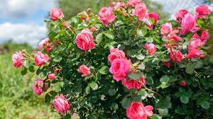

Rose Plant (Rosa spp.)
Scientific Name: Rosa spp.
Description: Roses are one of the most popular flowering plants worldwide, known for their elegant blooms and pleasing fragrance. They come in various colors and are often used as ornamental plants in gardens or as cut flowers in bouquets. Roses have symbolic meanings, often representing love and beauty.
Care Tips:
- Water: Requires regular watering, especially during dry periods.
- Light: Prefers full sunlight for optimal blooming.
- Temperature: Thrives in moderate temperatures between 15°C and 25°C.
- Soil: Prefers well-drained, slightly acidic soil.
Uses:
Roses are not only used in ornamental settings but also for extracting rose oil, which has numerous cosmetic and therapeutic applications. Rose petals are also used in teas and aromatherapy.